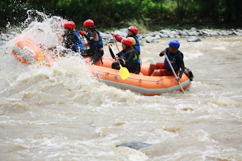

Wild Water Rafting is one of the popular eco-tourism adventures in Davao City
3 1/2 hour wild water rafting starts from Tamugan in calinan and ends at the lowlands
 The site for rafting is the 15 kilometer of rough water portionof the Davao River
The site for rafting is the 15 kilometer of rough water portionof the Davao River
 Lush greenery of trees and undergrowth along the river banks
Lush greenery of trees and undergrowth along the river banks